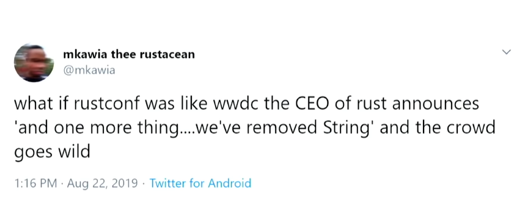
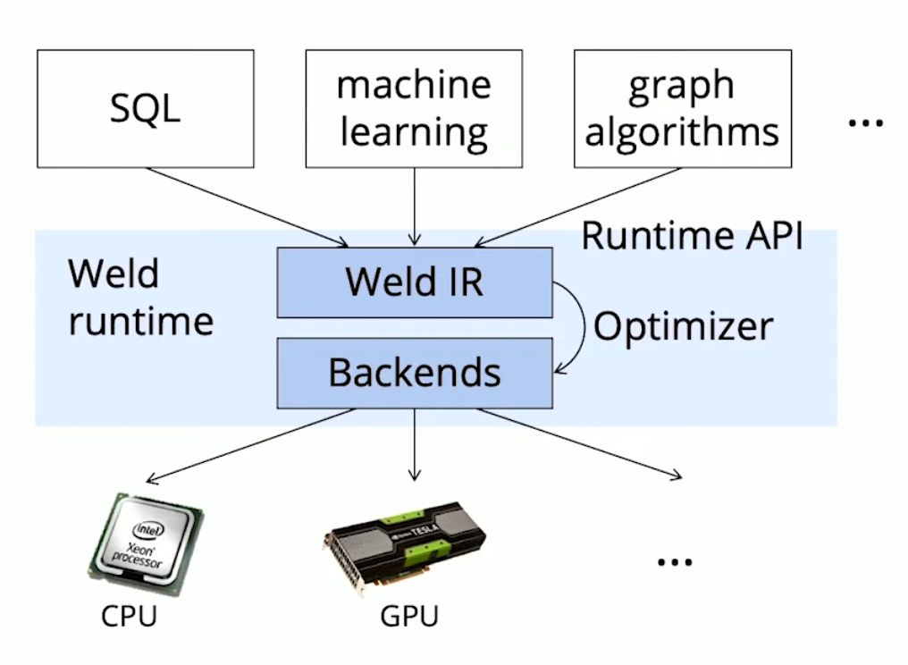
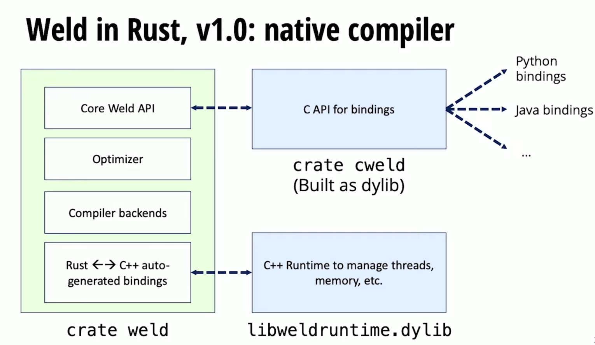

RustConf 2019 雲參訪錄（1）

RustConf 是 Rust 社群年度最重要的研討會之一，從 Rust 在 2015 年 1.0 版正式發布之後，2016、2017、2018 連續三年都在美國舉辦，今年當然不例外，八月底在 NBA 球迷稱作 Rip City 的波特蘭舉行。由於歷史悠久，加上 Rust 社群在美國較為活躍，許多 Rust Core Team 成員都會共襄盛舉，這場研討會是 Rust 開發者絕對不能錯過的盛事。
RustConf 歷年來皆由 Tilde Inc. 旗下的 Skylight 主辦，Skylight 是一個 Rails profiler in production 的解決方案，產品中關鍵的模組用了不少 Rust。
好了，介紹完背景，這篇文章主要是紀錄小弟我「在 YouTube 上」觀看演講的心得分享，當然，RustConf 除了主要的演講軌，還有不少場邊工作坊等小活動，這就留給看倌明年到實地考察啦！
目錄
這篇文章僅為部分心得，陸續更新中。
| 不負責任中譯講題 | 內容摘要 |
|---|---|
| ✅ Rust 慣老闆們如何管理 Rust 社群 | 回顧 Rust 過去一年成就，現在如何治理 Rust 團隊與社群，又遭遇什麼困難 |
| ✅ Rust 大法好，統一資料科學沒煩惱 | 資料科學工具 Weld 底層 JIT compiler 與 Runtime 技術選型與演進過程 |
| ✅ 鏽媳婦也得見公婆的臉書 | Facebook 內部的 Rust 生態現況與如何推廣 |
| ✅ Constant Evaluation 的五十道陰影 | const eval 目前開發狀況與未來藍圖 |
| ✅ 用 Rust 後依舊慢的 Electron | MongDB Compass 用 Rust + WASM 開發 Electron 心得 |
Opening Keynote
- 講者：Steve Klabnik & Florian Gilcher (@steveklabnik & @skade)
- 難度：入門
- 演講連結
由 Rust Core Team 給的開場 Keynote，主軸有兩個：
- Rust 過去一年耕耘成果
- 開源社群治理遇到的各種挑戰
Rust 過去的成果
開場先上個圖：

講者直接強調雖然這個推特很有趣，但是 Rust 是社群為主的團體，不會有這種 Top-Down 的決策出現。
因為這場演講的資訊較為分散，這裡僅條列我覺得有趣重要的：
- 關於講者：Steve 和 Florian 在貢獻 Rust 之前都是活躍的 Ruby/Rails 社群成員，很愛研討會的 Florian 甚至有舉辦過柏林的 Ruby 研討會。此外，有個秘密：Steve 就是 Twitter 的 rustlang。
- 關於 Stackoverflow 最受寵愛的語言：Rust 連續四年，而且 userbase 不斷上升，已逐漸脫離小眾語言衝高滿意度的境況。
- 關於研討會：除了 RustConf、RustFest、Rust Belt Rust，今年多了七場大型 Conference，遍佈南美、日本、中國、義大利、俄羅斯，甚至是專門的嵌入式 Rust 研討會，小弟有幸參與了 RustCon Asia。（據說大部分的研討會都是 old Rubyist 主辦）

- 關於成就：This Week in Rust 破三百期了、async/.await 1.39 會穩定、Rust team 現在有超過 200 名成員。
Organizational Challenges
Rust 開源專案越來越大，管理工作顯得越來越重要，Core Team 的兩位特別開闢這個章節，講述 Rust 專案目前遇到的各種困難和挑戰，希望有志之士一同來貢獻。
這裡同樣重點條列式：
- Rust 已漸脫離 Mozilla 掌握：超過 75% 的大型 Rust 專案不是 Mozillan 做的，
- 表揚隱形貢獻者：許多貢獻者不是透過寫程式的方式貢獻 Rust，例如舉辦 meetup，或是在公司內部推廣，這些都是一種貢獻，要如何表揚這群人並不容易。
建立新工作群組與架構變成愈趨重要：一個開源專案成長後長大需要區分類似 staff employee/line employee 的角色，需要透過嚴謹的工程分工，才讓專案能更順利發展。
Rust 套件、框架與夥伴的合法性浮上檯面：有人可能覺得 side project 上傳到 crates.io 沒問題，但處處可能有法律上或產權上的爭議。
不同的溝通模式：每個 Rustacean 想要的溝通方式不一致，在最外圈 Orbit 4 可能只是想要 get job done，但 obrit 1 的朋友卻想要和 Rust Core Team 深談。

Pragmatic, Active, Results-Based Project
最後，Rust 團隊引出了這場演講最重要的一張投影片，讓 Rustacean 了解管理團隊的發展方向：希望讓 Rust 成為一個「A pragmatic, active, and results-based project」。
- Pragmatic：計畫和解法要有可觸及效益，且這個法是生根在整個專案中。
- Active：持續自內改善組織架構，而非一味回應外界刺激。
- Results based：檢驗每個決定動作帶來的結果，並廣納回饋與意見。
後記：其實有在跟 Rust 社群動態的 Rustacean 對過去一年做了什麼並不陌生，但是開源社群治理是較少人注重的領域，很明顯感受 Rust 團隊在符合社群期待和達成優秀軟體工程流程之中拉扯，也持續徵求更多人來做專案管理。
Rust for Weld, a High Performance Parallell JIT Compiler
- 講者：Shoumik Palkar (@sppalkia)
- 難度：入門
- 演講連結
- 專案連結
- 專訪連結
- Palkar, Shoumik, et al. “Weld: A common runtime for high performance data analytics.” Conference on Innovative Data Systems Research (CIDR). 2017.
本場演講介紹 Weld 這個大型專案的背景與架構，非常簡潔扼要，且很清楚傳達專案目標，極推薦觀看。
Weld 是一個高效能的 Runtime + JIT Compiler，目標是加速已碎片化的資料分析函式（例如 Numpy、Pandas），現在也能針對更通用的場景平行加速。
講者 Shoumik Palkar 是史丹佛大學的 Ph. D，師承 Scala 創造者 Matei Zaharia，可謂大神出自大神。
既生 Numpy，何生 Weld？
演講一開始就點出創造 Weld 的目標（絕對不是找不到論文題目）：當前資料分析工具的的最佳化多半針對個別函式（per function basis），不同功能的函式往往自成一個函式庫，這種現象雖然有利於更多貢獻者加入，但是不同函式、不同函式庫間的最佳化非常匱乏。小弟我擅自將這種現象稱為「Optimization Fragmentation 」（自作聰明）。
例如下面例子，就算是 Pandas 和 Numpy 這麼常溝通的套件，兩者之間並沒用 Iterator trait 這種 lazy evaluation 抽象，導致整個 data frame 每一步都會重新計算，簡直 memory eater。

而 Weld 的目標就是解決 cross-function 的最佳化，Weld 是一個通用的資料分析 Runtime，輸入資料分析常用的格式 SQL/ML/Graph-algorithm，經過通用平行化的 Runtime 最佳化，再輸出到不同的 compile target 如 CPU/GPU 或是各種計算分析平台。以下是 Weld 應用場景簡圖：

- Weld Runtime 由以下幾個組件組成：Weld Runtime = Weld IR (+ optimizer) + backends。
- Runtime 主要功能：IR fragments -> combined IR -> optimized IR -> machine code
- 因為是 Runtime，所以很容易實作自己的 REPL！建議可以直接看影片（左邊就是 Weld IR）

為何選用 Rust 開發
老實說，一開始 Weld compiler 是 Scala 寫的，Scala 的優勢如下：
- Algebraic types 和 pattern matching：容易撰寫各種 parser 和 compiler
- Large ecosystem (Java)
- 講者的 advisor 尬意（就是 Spark creator 嘛）
但 Scala 的劣勢也惡名昭彰：
- 不容易 embed：需要 JVM，把 JVM 放到其他語言太肥）
- JIT 太慢
- JVM 自己管理 runtime（managed runtime），FFI 不好寫
- Scala 的 build tool sbt 很詭異（原文是 clunky 😂）
- Runtime 可能還需要用其他語言做
綜合上面考量，需要重新設計以下 compoment：
- JIT：效能考量
- Core API：要容易開 FFI
- Runtime：要有 native memory layout，才能做各種底層最佳化、平行化
講者最後比較了 Rust、Swift、Go、Python、C++、Java，最後只有 Rust 完全符合下面幾項標準：
- 快
- 安全
- 沒有 managed runtime，可以很容易整合到其他 runtime 中
- Build system 不錯，有 Cargo 撐著
- 有相對不錯的 functional paradigm 和 pattern matching
- 社群很棒
Weld 歷史沿革
1.0 版
1.0 版已經用 Rust 重寫 compiler ，但 Runtime 還是 C++ runtime，C API binding 也還是用 C 寫，所以整個 Weld 在 1.0 其實是 C/C++/Rust 混雜的專案。

幾個實作重點節錄：
- Weld IR 是一顆 AST（abstract syntax tree）
- Pattern matching 和 scala 非常相似，幾乎是 1：1 轉移
- Rust 可以很方便直接使用 LLVM CPI
*-sys來 code generation - 跟 Scala 比 不需要 wrapper object 也不需要和 GC 溝通，就可以開 FFI，例如
#[repr(u64)]的設定、#[no_mangle]設定，甚至可以透過 proc macros 來處理 FFI - Cargo 可以用來自動生成 C header（w/
cbindgen） - 使用 Cargo workspace 分離關注點，並用之構建 subcrate（講者在此透露出對 makefile 的怨念）
效能注意事項：clone 是 Rust 的緊急逃生出口，但容易被濫用
- 對效能是致命傷，尤其是 drived 出來的 recursive clones。
- 對 new Rustacean 來說誘惑太強，尤其充斥著 poiner-based 資料結構 和 borrow checker 的環境。
- 用 placeholder 和
mem::swap將需通過 borrow check 的資料 以move代替clone，減少開銷。
2.0 版
決定把 C++ runtime 用 Rust 重寫
- 更安全
- logging debugging 終於可以共用同一個 Rust codebase
- Runtime/Compiler 之間更容易互傳資料

額外補充：以下這個圖表示 Rust 以開 FFI 的方式給 JIT machine code 呼叫（真香）。

結論
Rust 為什麼適合做高效能的 JIT compiler 和 runtime？
- 具有函數式語義方便打造編譯器
- 提供執行時期（runtime）原生執行速度與精細底層控制
- 無縫接軌的與 C 寫作 -> 代表可以很容易與其他語言掛鉤
Bringing Rust Home to Meet the Parents
這場演講是來自 Facebook 的講者，講述 Rust 在 Facebook 內部的各種面向，主要包括開發環境、工程師回饋、目前使用的場景，演講內容其實蠻多都是已知的優缺點，但是從一個 Facebook 僱員口中說出來份量就是不一樣，不過演講的風格我不太能接受就是。
講者背景如下：
- Kernel/hypervisor/system in pure C（三十年經驗）
- 比起愛 C，C 更像是他有的技能，
- Rust：講者認為在各種角色上有可能取代 C 的語言
在 FB 三年，看到很多高手對 Rust 有興趣但沒行動
在 Facebook 導入 Rust 的困難
導入一個新語言不是只有技術問題，而是一個風險高的賭注，而且更多工程師只想要完成工作，而非玩弄技術，所以 Rust 需要「非常值得」才有可能導入。
最困難的是後端開發環境，Facebook 的後端環境太過多元太多客製化：
- 多語言的 monorepo 環境，百萬個檔案，破億行程式碼的 monorepo 獨霸。
- 御用語言是 C++、Java、Python。
- 從 source code control、CI/CD、測試環境，到部署工具幾乎都是自己手刻。
上述的環境與 Rust 以 Cargo 為構建中心的思維相互抵觸，基本上 Rust 只會區分 Rust 和 Non-Rust 程式碼，但這遠遠不夠 Facebook 使用，我猜也許是不容易整合入 Facebook 的 Buck。這讓我聯想 Google 的 Bazel build toolchain 其實已經可以整合 Rust 了。
Rust 導入 Facebook 的優勢
程式碼品管
Facebook 有嚴格的程式碼品管，從 Code Review、Static Analysis，到 Test Infrastructure 非常齊全，但如何上線的程式出現問題，需要工程師在開發新系統與解決臭蟲之間 context switch，成本不小。而 Rust 嚴格的編譯器和方便的測試撰寫，讓這一切運作在開發循環中（development loop）解決，不需要延伸到正式環境。
當然，如何量化沒有發生的 bug 的價值，一直困擾著軟體工程界。
更低的維護風險
同樣因為 Rust 注重安全性，修改遺留程式碼時能夠避免引入更多錯誤，加上嚴謹的型別與生命週期（type + lifetime）編譯條件和高度抽象，讓維護或閱讀程式碼時可以更注重在高層次的邏輯，而非底層運作，從而避免改爆既有程式碼。
Facebook 的 Rust 社群現況
Mononoke 是 Facebook 用 Rust 重寫的 Mecurial 實作，特色如下
- 非常早就使用了 Tokio stack
- 用了 Rust 後就沒有 memory corruption，但仍有 stack overflows
- C++ binding 或是 FFI 來的 core dumps 無所不在
而在 Facebook 使用 Rust 最多是動態語言的使用者，尤其是 Python 社群，Node.js/JavaScript 社群也高度關注 Rust 動態。蠻多一部分是寫 CLI app，都大推 clap.rs + structopt。
其他語言來的使用者，大部分的心聲如下：
- 函數式程式語言：很容易理解 Rust 的精髓
- C++：Rust lifetime 有道理
- Go/Java：較難從 GC 大補湯中走出來
- 各種繼承語言：有一個大誤區「Trait mania」（聽起來像繼承地獄）
而 Facebook 內部正在建立 Rust 社群，這個社群有以下特質：
- 是一個外部 Rust 社群的延伸（外部社群已非常健康活躍）
- Review 文化：協助 review 新 rustacean 的程式
- 混合內外部的文件資源，來建立完善的文件系統，不過目前沒有善用 rustdoc。
- 每個評估過 Rust 的團隊仍然在使用，而且不後悔
- Facebook 整體的開發經驗非常舒服，而且對 Rust dev 來說開發很自然
- 已經有在很多高價值的專案裡（沒透露細節）
Taking Constant Evaluation to the Limit
這場演講是我聽了這幾場 talk 中數一數二難，除了講者帶了很多觀念但沒有太深入講解外，講題本身和不同語言／記憶體模型／編譯器等領域知識要求都頗高，C++ 和 send/sync 的運作原理不熟可能會有點辛苦。
這場演講主要在闡述 Constant Evaluation 這個在編譯期就計算出表達式的最佳化手段，主要分為三個部分：
- 為什麼需要 const eval？
- 我們想要怎樣的 const eval？
- 現在 Rust 的 const eval 情況如何？
首先，講者點評了為什麼需要 const eval ：
- 可以保存執行期（Runtime）的寶貴的運算資源。
- 先計算出一些值，減少因為 Rust 嚴格的型別系統帶來寫作上的麻煩。
- 在編譯期就可以給定一些限制，讓執行期更安全。
- 因為我們可以做到。
其實對於第二點與第三點，沒有範例我也不是非常懂，因為目前 Rust 的 const eval 裡面的表達式都要是 constant，會比一般的 Rust code 更加嚴格，也許這樣就能做到第三點的目標。
而講者也提到 constant evaluator 的等級分類法：全能（omnipotent）、有限制的全能（restricted omnipotent，這還叫全能嗎）、天生殘疾（inherently limited），Rust 則是分類在「非常被限制的全能（very restricted omnipotent）」。但這個被限制並不是不好，許多東西可能永遠不會再 const eval 實作出來，例如改變 global state，或是導入 random number generator，這些會讓編譯引入不確定性，需要避免。
講者繼續點出一般使用者想要 const eval 有什麼功能，整體分為四類：
- Heap allocation（no RFC ye）
- loop 與 if condition（Accepted RFC）
- 呼叫 trait method
- unsafe（no RFC yet）
接下來就是一一告訴你為什麼這些還沒做／遇到什麼問題。 （但其實可以用 unsafe 了，只要 unsafe block 裡沒有任何 unsafe 操作就行）
Heap Allocations Problems
我們無法確認這個 ·FOO 什麼時候會被呼叫 drop 被 dealloc，C++ 這樣也不合法（如果不是 heap alloc 就直接 bit-by-bit copy 整個 foo 就可以，完全合法）
const FOO: String = format!(...);
let x = FOO;
drop(x) // 我們無法得知誰會呼叫這個 drop
但是 &String &str，或是其他 non heap type 都合法，因為只是複製指標。
const BAD: String = format!(...);
const OK: &String = &format!(...);
const OK2: &str = &format!(...);
const OK: &MostNonHeapType = ...;
這種 move 不合法，但在指標後面就合法的行為，是不是很像 Send + Sync？沒錯，const heap allocation導入了 ConstSafe 、ConstRefSafe 兩種新型別，用處理 multi-threading 那一套方法來解決 const eval 的問題。
講者提及 C++ 20 才有 heap alloc const eval 的標準提案，因為 C++ 覺得這種作法太危險，只能在 computation 期間用到，但 final product 不能有任何 heap pointer，這是非法的。而 Rust 和 C++ 不一樣，我們其實可以有 heap alloc，只要他躲在 ref 後面就行了，例如下面這個 String 就會實作 ConstRefSafe（類似 Sync）。
unsafe impl ConstRefSafe for String {}
Rust 太安全了，只要照著 Send 和 Sync 的經驗再次開放，大致上就能完成 heap alloc in const eval，以下是 ConstRefSafe 目前的定義：
// 類似 impl Send for &Sync
unsafe impl<'a, T: ConstRefSafe> ConstSafe for &'a T {}
想了解更多的話，這裡有講者草擬的 RFC 可以參考。
Unsafe In Constants
再來講者提及 unsafe，其實已經可在 const eval 寫 unsafe，只要我們的 unsafe 裡面沒有真正的 unsafe（笑）。我們都知道處理不好的 unsafe block 會給程式在執行期帶來 undefined behavior，而 unsafe in const eval 則是導入「Compile time undefined behavior」（再笑）。
目前 Rust 還沒有辦法分辨 transmute 之後會不會有 UB，但在編譯時期就可以 dereference 的確是大家都想要的一個功能。
// UB
const X: i32 = unsafe { *(42 as *const i32) };
const Y: bool = unsafe { transmute(3) };
// Not UB
const X: *const i32 = &42 as *const i32;
const Y: i32 = unsafe { *X };
Don’t Try This At Home
講者最後總結了 Constant Evaluation 的現況：沒有什麼理論上的限制，現在就可以玩很多花樣，只要家下面這個內部測試用的 compile flag:
-Zunleash-the-miri-inside-of-you想玩 stable Rust 的 const eval 的話 static_assertions crate 歡迎你！講者也承諾現在也不會再大改 API 了，以下示範 static assertion 怎麼做到 boolean 的 assertion，小弟認為很魔性。
// 如果 boolean 是 true 就會 index 0，不是的話就會 out of bound error
[()][(!ok) as usize];
最後講者示範了 fibonacci sequence on stable rust in compile time，有趣的是這個費氏數列無法成功編譯，會噴 compile error，這個 error 就是費氏數列的值，馬上獲得全場獲得如雷貫耳的掌聲。（全劇終）
let _: [(); {
let mut fib = 1;
let mut prev = 1;
let n = 0;
while n != 10 {
let swap = fib;
fib += prev;
prev = swap;
n += 1;
}
fib
}] = [(); 42];
// error[E0308]: mismatched types
// --> src/main.rs:13:6
// |
// 13 | }] = [(); 42];
// | ^^^^^^^^ expected an array with a fixed size of 144 elements, found one with 42 elements
// |
// = note: expected type `[(); 144]`
// found type `[(); 42]`
From Electron, to Wasm, to Rust (Aaand Back to Electron)
這場演講主要分享一個 JavaScript developer 用 Rust + WASM 寫 Electron app 的觀點，也稍微提及 Rust 的 WebAssembly 生態，相信蠻多開發者會有興趣，但對熟悉 WASM 的強者來說知識點有點不足。演講有兩個最大的亮點：
- 講者來自 MongoDB，負責開發 MongoDB 的 GUI client - Compass。
- Rust 成功讓目標功能快了 3x 到 40x。
講者實作 Compass 其中一個功能「Schema Analysis of Mongo Collection」，就是是給定一堆 Mongo doucments 幫你找出 schema 到底長什麼樣子。
為什麼選擇用 Rust + WASM
講者需要一個 progressive collection scan，但是原本的 JS 版本分析 10000 document 就要 1216000 ms，實在太慢，決定重寫 schema parser，考慮過用 V8 dark art 或是 Web worker 來加速，但其實沒有很清楚說明為什麼最後選擇 Rust，只是說倒不如用 Rust 重寫，個人認為論點不足，不過有提到一個有趣的觀點：「你不需要自己使用 Dark Art」，這和我的觀點不謀而合，語言是用來給人讀的，如果一個程式語言很厲害，代價是寫出無人能懂的程式碼，那就不是好的產出，除非那段程式碼沒有人需要再讀第二次（或是這段程式碼你交付了就沒你的事 XD）。
一些實作小細節
- Rust 可以用這個 bson crate 直接處理 BSON 檔，直接跳過 string 這個環節
- 然後 bson crate 用到 libc，不過想編譯成 WASM 的話它有提供 target_arch 的 attribute 開關
- Rust 的 nubmer type 比 JavaScript 多太多了，講者最後選了與 BSON 最相關的
f64和uszie
- 選用用了 failure 解決 error 問題
有關 WASM 與 Rust
講者蠻清楚節錄幾個講者提到的有趣觀點
WASM 只是一種 compilation target
wasm-bindgen讓 JavaScript 可以 import Rust binding 模組在 console debug 只能找到 js binding 的位置，最多到 wasm binary foramt，無法定位到 Rust：使用講者自己寫的
femmecrate 來定位（你問為什麼不用支援 Rust WASM debug 的 Firefox，我的老天鵝這是在開發 Electron 啊）wasm-pack可以將 Rust-wasm 打包成 npm module用
Uint8Array溝通，讓傳遞資料不再因為 stringify 而失去一些精度解決 Rust
Err與 JavaScriptError的溝通：因為 wasm-bindgen 還不能從 Rust 直接 throw JsError，所以先 Stringify RustErr到JsValue給 JavaScript 接：pub fn wasm_write_json(...) -> Result<(), JsValue> { match ... { Err(e) => Err(JsValue::from_str(&format!("{}", e))), _ => Ok(()), } }
不過這樣太爛了，所以最後用了 js-sys ，這個 crate（也是官方 WASM working group 出品），提供了從 Rust 呼叫 JavaScript API 的 raw binding，裡面還包含的各種 js_sys::TypeError 、 js_sys::ReferenceError 等原生 JS 錯誤。
Rust lets you write performant and clean code right off the bat
這句話一個寫 Rust 不到一年，但已經站在 RustConf 的舞台上的 JavaScript 工程師的心聲。最後講者附帶了之前 Mozilla 工程師用 Rust 重寫 sourcemap，被 Google 的 Dart lead 反擊，然後兩個人的唇槍舌劍（但其實都算有風度）。這串我當初有追，高手過招，小的惶恐不安。
後記：MongoDb Compass 慢死了，本來在 Robo 3T 一秒可以查詢的 query 用 Compass 一直 timeout，簡直整個鏽掉。